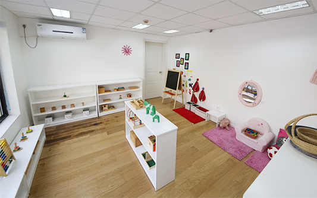
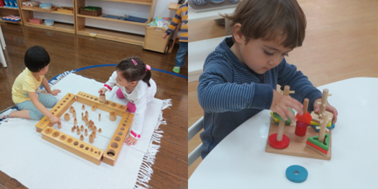

“全面发展”的教学方法
我们如何帮助每个孩子在生活的各个领域都实现自己的最大的潜能呢？我们如何帮助孩子建立自信并让孩子主动探索和学习呢？这些都是蒙特梭利教育的首要目标。蒙特梭利所有的学习活动都致力于培养孩子的专注力、创造能力及情绪控制能力。同时，锻炼孩子的身体协调能力，为认知的进一步发展做准备。丰富全面的课程让孩子沉浸其中，充分体会到学习的快乐，培养孩子的专注度和独立性。同时，将音乐，艺术和体能融入一日课程之中，全面提升孩子的综合能力。
“准备完善”的环境
要让孩子实现自主学习，学习环境、教学材料和教室环境必须起到促进作用。老师需要提供必要的资源，比如，给孩子创造安全和积极的活动氛围。孩子需要知道每样教具摆放的具体位置，学会如何与他人分享资源和如何完成任务。孩子因而信任老师，这种信任让孩子有信心按自己的步调去尝试新事物。经历自我探索而获得的成功有助于孩子建立自信，进而进行更大胆的尝试。
蒙特梭利教具
蒙特梭利教具是多感官、有顺序、并且具有自我纠正功能，有助于孩子学习各种技能和概念。例如，实际生活领域里使用钳子这一项活动对于三岁的孩子来说是很有趣的，这项活动让孩子的手变得更灵活，对以后书写有帮助。通过形象化的实物来增进理解，是蒙特梭利学习过程中一个重要的组成部分。孩子通过实际的物体和珠子来学习数数。他们可以看到，随着数字增大，珠子变得越来越长，也可以看到乘法、减法等运算原理。在这个基础上，孩子可以很容易地过渡到抽象推理。
教师的角色
对于孩子来说，蒙特梭利老师起到的是协助而非主导的作用。他是一个行为榜样，是学习环境的设计者、资源的提供者、教具的展示者，也是每个孩子成长和发展的纪录者和观察者。他鼓励并且尊重孩子，每个孩子在他眼中都是独特的个体。他向家长提供教育方面的支持，和家长一同关爱孩子的发展。
蒙氏教室的独特性
每个蒙特梭利教室都是按照其所特有的“黄金法则”运作的，是以尊重自己、他人以及环境这一蒙特梭利核心理念为依据的。孩子可以自行选择教具，按自己的步调自由的工作，可以独自完成也可与他人合作。通过对孩子在蒙氏课程期间的观察，老师可以决定哪个孩子或哪些孩子适合学习新的活动或新的教具，目的就是鼓励孩子积极自主的学习，并在个人学习和小组合作中取得平衡。